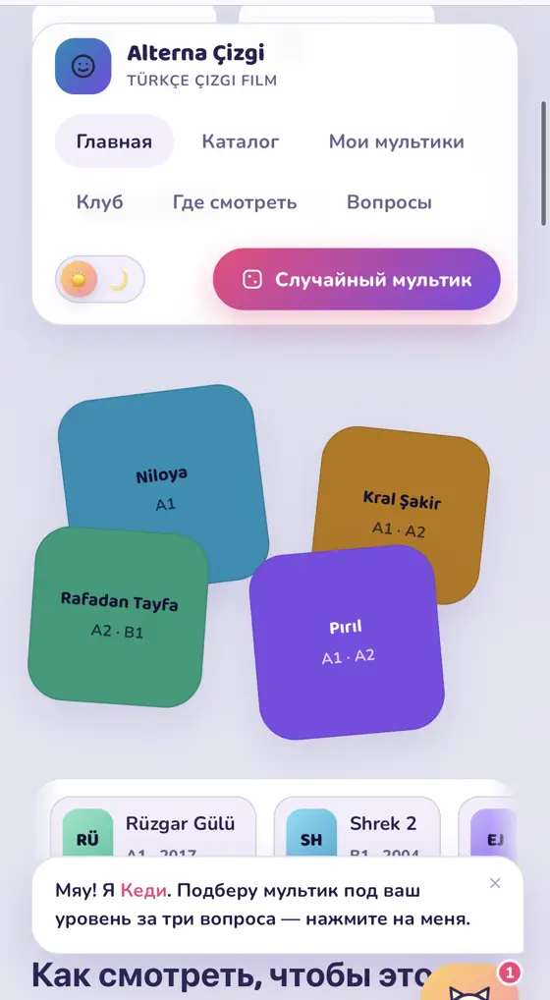
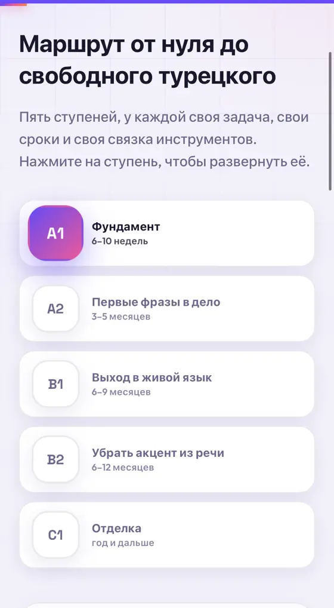
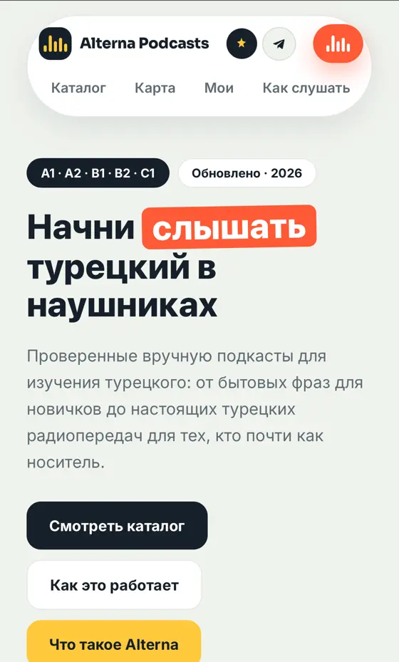
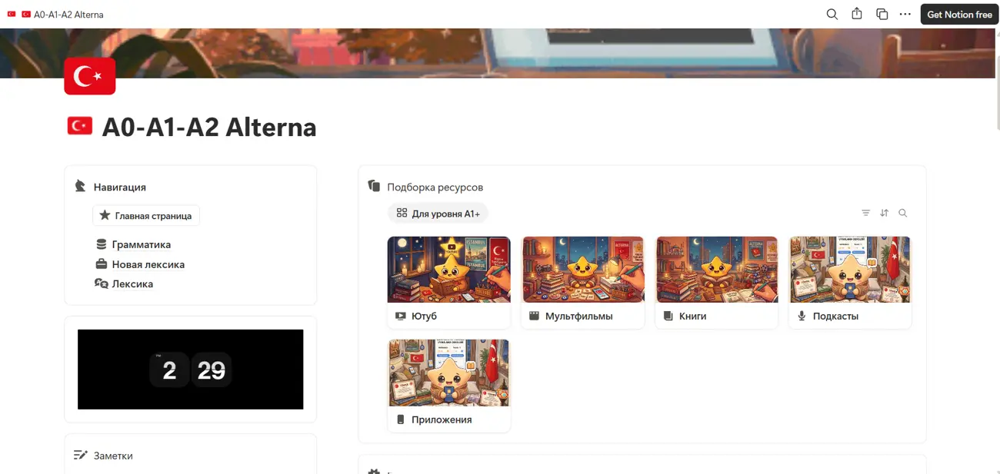
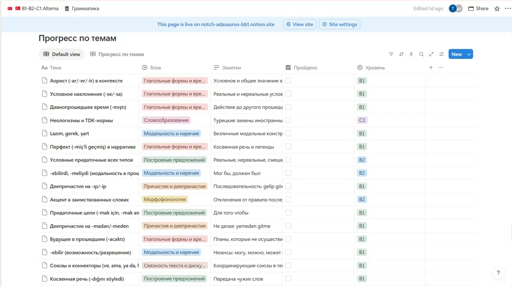
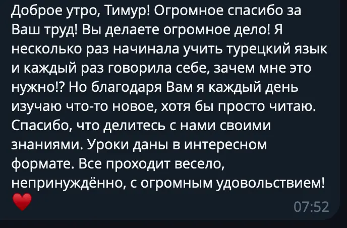
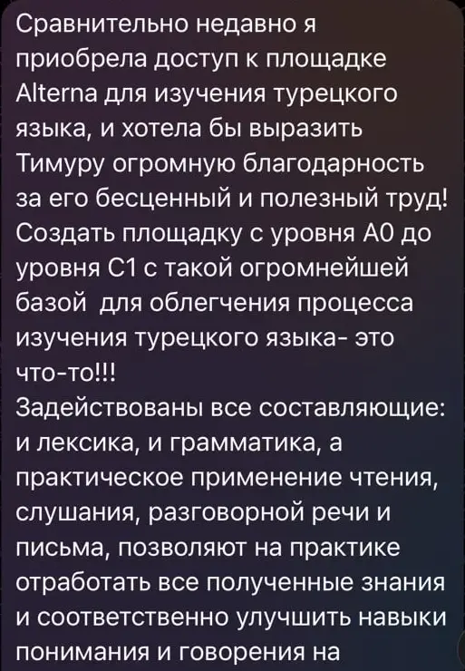
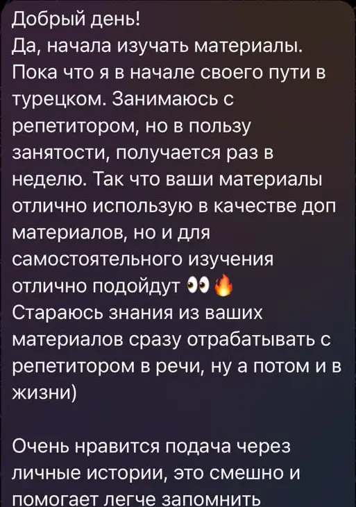

1 / 3
У меня был учебник турецкого. В учебнике был диалог. В диалоге один турок спрашивал другого: ne yapıyorsun.
Другой отвечал: kitap okuyorum.
Все были довольны. Особенно учебник.
Быстрая турецкая речь без мистики. Какие буквы турки съедают, в каком порядке и как начать это слышать прямо сейчас.
У меня был учебник турецкого. В учебнике был диалог. В диалоге один турок спрашивал другого: ne yapıyorsun.
Другой отвечал: kitap okuyorum.
Все были довольны. Особенно учебник.
Сажусь в долмуш. Рядом девушка говорит в телефон, napıyosun. Думаю, кто такой Napı.
Говорит, geliyom. Думаю, кто такой Yom.
Говорит, yapcam. Думаю, ладно.
Видимо, я учил другой язык.
Открываю словарь. Ищу napıyosun. Нет такого слова. Ищу geliyom. Нет такого слова.
Наклоняюсь к девушке. Говорю, извините, что такое napıyosun. Говорит, ne yapıyorsun. Говорю, а почему вы сразу так не сказали.
Говорит, я так и сказала.
Слова те же. Смысл тот же. Просто часть букв не доехала до рта. Листай вниз и смотри, как это происходит.
Героиня говорит seni seviyom. В субтитрах: люблю тебя. В учебнике: seni seviyorum.
Ухо ждёт r. R не придёт.
Подруга пишет: nerdesin. Словарь молчит. Переводчик пожимает плечами.
А это просто neredesin. Ты где.
Турки съедают буквы не как попало. Там есть система. Система, правда, нигде не записана.
Самое частое сжатие в языке. Настоящее время.
Нажми на строку, там живой пример. А ещё r падает в любой форме с -iyor:
Смотрит на свою последнюю гласную и командует. А вот o в yo не меняется никогда. Упрямая.
В паре глаголов: git и et. А p, ç и k в глаголах стоят насмерть: yapıyom, seçiyom, bakıyom. Никаких yabıyom.
Только к двум глаголам: yap и ol. Зато они в каждом разговоре.
Отвечать на napıyosun можно одним словом: hiç. Ничего. Это честно и никого не волнует.
Тут целый спектакль в семи актах.
Два варианта, как обычно. А в длинной форме появляется ещё одна гласная из четырёх: yapıcam, gelicem, olucam, görücem.
Двенадцать слов, которые услышишь сегодня. Переверни и проверь.
И отдельно буква ğ. Она почти всегда молчит и только тянет соседнюю гласную: öğretmen звучит как öretmen, yağmur как yamur.
Одно действие. Четыре времени. Два сжимаются, два стоят как памятник.
Прошлое -dı не трогаем. Оно уже случилось.
-iyor теряет r и u. Сжимается.
-acak теряет почти всё. Сжимается сильнее всех.
В -ir буква r железная. Geli не существует.
Турок ставит глагол в конец. А сжат именно глагол. Вся фраза идёт нормально, и на последней секунде тебе бьют по уху.
Ben вообще не приедет. По окончанию и так ясно, кто идёт. Поэтому слушай до конца фразы. Главное там.
Сначала угадай, что не так. Потом жми.
Букву i терять нельзя. Падают только r и u. Связка держит конструкцию.
В gel передняя гласная. Значит cem. Гармония работает и на скорости.
В yap гласная a. После неё ı без точки. Точка меняет слово, турки это слышат.
Перед гласной t в git превращается в d.
R падает только в -iyor. В -ir она остаётся.
Сжатые формы живут в речи и в чатах. В письме, на экзамене и в документах только полные.
Когда это артикль, говорят bi. Когда считают, r на месте.
Только с yap и ol. Остальные слова ходят отдельно.
Gidicem и gitcem. Обе живые. В короткой гласной после корня нет, поэтому t остаётся.
В живой речи турок иногда говорит глагол первым, а уточняет потом. В учебнике за такое ругают.
Форма -ayım и -eyim на скорости меняет гласную.
Napıyosun это мирно. А если медленно и по слогам, со всеми буквами, лучше сразу извиниться.
Остальные 127 разобраны так же. С буквами, ловушками и живыми примерами.
Теряет r. Geliyorum становится geliyom.
Слипаются. Ne oldu становится noldu.
Теряет почти всё. Yapacağım становится yapcam.
Худеют. Değil mi становится di mi.
Говорить так необязательно. Понимать обязательно. Иначе так и будешь искать в словаре человека по имени Napı.
Разные типы. После каждого разбор, почему так. Подглядывать можно, никто не узнает.
Шучу. Реклама начинается сейчас. Вот так разобрана одна тема: скорость, буквы, ловушки, озвучка, проверка. А на платформе так разобраны все.
С субтитрами я всё понимал. Гордился собой. Рассказывал знакомым.
Выключил субтитры. Героиня сказала что-то важное. Герой заплакал. Музыка заиграла.
Я так и не понял, кто умер.
В приложении был огонёк. Огонёк горел каждый день. Огонёк мной гордился.
Прилетаю. В кафе спрашивают, napıyosun. Огонёк не помогает. Говорю, elma yiyorum.
Я ем яблоко. Яблока у меня нет.
Если ты понимаешь текст, а живая речь пролетает мимо, с ушами всё в порядке. Их просто никто не учил. Учебник учит читать. Приложение учит возвращаться в приложение.
Каждую тему объясняю так, как только что объяснил эту. Просто, по делу, с живыми примерами. Не через английский и не сразу на турецком.
58 для A1-A2 и 70 для B1-C1. Разобраны как на канале.
Не список слов, а то, что реально говорят. Napıyosun там будет.
Слова, тексты, диалоги, аудирование, игры на запоминание. Для тех самых ушей.
A1, A2, B1, B2, C1. По каждому отдельно.
Для тех, кто ищет работу или уже работает.
Фильмы, книги, мультфильмы, подкасты, приложения, YouTube.
С нуля или почти с нуля. Маршрут начинается с алфавита и звуков.
Хватит включать сериал наугад и расстраиваться. Открываешь свой уровень и берёшь то, что поймёшь.
Настоящие экраны платформы. Открывается с телефона и с ноутбука.
Гайд по грамматике: правило, схема, примеры, тренажёр.











Один раз. Доступ навсегда.
Посчитай: 436 гайдов и блоков за $30. Меньше семи центов за штуку. И 1716 материалов сверху.
Честно: когда он дойдёт до нуля, цена не изменится. Скидки тут нет, сгорать нечему. Таймер про другое. Пока тема свежая, хочется открыть следующую. Закроешь вкладку, и завтра будет завтра.
Один раз на lava.top. Если неудобно, пишешь в WhatsApp.
Платформа живёт в Notion и открывается по ссылке. Навсегда.
Открываешь свой уровень и включаешь первое, что поймёшь. Без субтитров.
Нет. Это платформа для самостоятельной учёбы. Гайды, лексика, интерактивы, материалы. В своём темпе.
Да. Маршрут начинается с A0: алфавит, звуки, гармония гласных.
Это как раз про B1-C1: 70 гайдов и 46 интерактивных ресурсов, а ещё материалы по уровню. Сериалы, подкасты, YouTube.
На русском. Как на этой странице.
Оплачиваешь на lava.top или пишешь в WhatsApp. Платформа живёт в Notion и открывается по ссылке.
Навсегда. Один платёж $30. Подписки нет.
Следующая тема уже разобрана. И следующая за ней тоже. Их 128.
Alterna Timur $30навсегда · 15:00